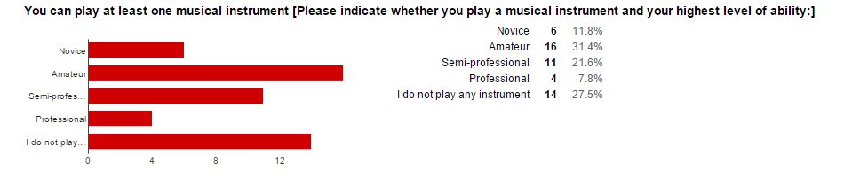
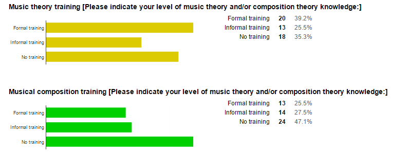

This page provides details concerning the survey undertaken as part of the assessment of the program, including providing the results of the survey.
As part of the assessment of the program, a survey was distributed that asked participants to compare paired samples of music generated by the system. Each pair contained a piece that received a high rating and a low rating from the system. Each participant was asked to indicate their preferred piece of music, the level of their preference, and the reason why they preferred the piece/p>
In order to help classify the respondents, participants were asked to identify their typical musical preferences, whether they could play a musical instrument, and whether they had any training in music theory or music composition.
Justification of survey approach: With this survey, my aim is to assess the preferability of musical fragments output my the music generator program implementing the GTTM theory of musical grammar as the basis of musical generation. Each pair of musical fragments represents the most preferable and unpreferable solution to the grammar generated by the system as determined by the rating system of the program. The rating system provides a rating as to how well each solution fits the grammar that was used to generate it. The survey aims to assess how well the ratings given to each fragment fit the intuitions of human cognition of music by asking participants to indicate which solution they find to be most preferable. Preferability is an important concept in GTTM theory, and the ratings system uses the preference rules of the GTTM to assess the preferability of each piece. In terms of the theory, preference is premissed on the concepts of musical interestingness, natural soundingness to humans exposed to the western tonal tradition, and structure (which in the survey is articulated by asking the participant to indicate how 'random' each fragment feels. To this end, the survey makes a point of establishing the musical ability of each participant as it is important calibrate how exposed each participant is to tonal music.
An application for ethical approval was submitted. However, I didn't receive the approval form. I am attaching an e-mail correspondence that demonstrates that the survey has been approved for ethical approval. It is accessed here.
Each participant was asked to pick a preferred piece of music from a pair of musical fragments. In each case, one of the fragments represented a solution that received the highest rating from the RatingsGenerator class, and the other fragment represented a solution with the lowest rating. Here is a table representing the ratings values for all the pieces of music:
| Pair Number | Fragment 1 Rating | Fragment 2 Rating |
|---|---|---|
| 1 | 0.7194248676670552 | 0.613394157925408 |
| 2 | 0.6962213307525806 | 0.6667269622738372 |
| 3 | 0.6501050246050246 | 0.7420898838815505 |
| 4 | 0.6863947460367914 | 0.5789341889171434 |
| 5 | 0.6963853627082793 | 0.6163779164508331 |
| 6 | 0.6535787259615384 | 0.7170226604992229 |
| 7 | 0.6763552468720738 | 0.5949242424242425 |
| 8 | 0.61423475675559 | 0.7017640561598895 |
| 9 | 0.6987947530864198 | 0.6710212380212379 |
| 10 | 0.5989039350800714 | 0.6766936895175532 |
The musical fragments used in the piece can be found here:
Pair 1: Fragment 1, Fragment 2
Pair 2: Fragment 1, Fragment 2
Pair 3: Fragment 1, Fragment 2
Pair 4: Fragment 1, Fragment 2
Pair 5: Fragment 1, Fragment 2
Pair 6: Fragment 1, Fragment 2
Pair 7: Fragment 1, Fragment 2
Pair 8: Fragment 1, Fragment 2
Pair 9: Fragment 1, Fragment 2
Pair 10: Fragment 1, Fragment 2
This section will provide the results of the survey and an overview of the analyses performed on the results.
Please click here for a link to a spreadsheet of the survey data
The first page of the survey was dedicated to a series of questions aimed to help classify the respondents into different types of music listeners.
The first question asked how often listeners listened to certain types of music. Here is an overview of those results:
As an addendum to the first question, participants were asked to identify other types of music that they frequently listen to. Here are the responses:
| Responses |
|---|
| Heavy Metal: Daily |
| Jazz/blues Very frequently |
| Nordic folk, jazz and polyrhythmic metal. |
| Electronic Music - Very Frequently |
| Metal, very frequently |
| Jazz - Regularly |
| JAZZ - very frequently |
| jazz, weekly |
| House/trance/techno/electronica |
| Jazz - occasionally, Early Music - regularly, Military music - occasionally, 21st-century art music - occasionally, Rave/hiphop/dance - occasionally, electronica - regularly |
| English Folk Music |
| electronic |
| Greek traditional music, about 5 times/year |
| Jazz daily |
| Operetta |
| R&B, Rap- Very Frequently |
| jazz, funk, blues, latin, gospel |
| Programmed/chip generated, ie Bobby Prince, Yuzo Koshiro, Stéphane Picq - daily bases experimental electronic |
| Folk. Occasionally. |
| Jazz, at least once a week, and ambient, at least once a month If you count oldies as something other than pop or rock, then oldies! |
| blue |
Participants were asked to identify whether they could play an instrument and their level of ability. Here are the results:

Participants that indicated that they could play an instrument were asked what kinds of music they play most often. Here are the responses
| Responses |
|---|
| Marching band music, jazz, classical (all periods). |
| Electronic |
| I played classical music with cello and normal high school band stuff with flute - marches, classic American tunes, oldies and pop songs. |
| Acoustic guitar - rock, folk |
| Guitar and drums - prog rock Violin - folk |
| Metal |
| Rock, heavy metal, pop and country. |
| Classical, Rock, Pop |
| Classical piano |
| Rock/ Metal. |
| jazz, funk, pop, gospel, rock, rock'n'roll, reggae, afrobeat |
| I learned the piano as a teenager but I never play now. |
| Jazz, Classical |
| Latin American and Spanish classical/20th Century music. |
| Jazz Classical Pop/Blues Gospel |
| Soul, Funk, blues, Folk jazz |
| Piano, Electronic Keyboards, and Bass Guitar, playing Rock, Classical and Jazz |
| ambient electronic shoegaze post-rock |
| Musical Theatre, Ambient Soundscape |
| Blues & folk - electric & acoustic |
| Classical, 20th Century classical, Pop, Jazz, Show tunes |
| Jazz, classical, musical theatre, soul, pop |
| classical |
| Classical, Romantic and baroque. |
| Pop and folk/traditional music |
| Classical guitar, prog rock guitar, folk |
| Classical |
| Rock Pop |
| Pop |
Finally, respondents were asked to indicate whether they had had any formal or informal training in musical theory or composition theory. Here are the results:
Participants were presented with a series of pairs of music to listen to and asked to indicate which piece they preferred.
Here are the results that indicate the percentages of people that chose either the first fragment or the second fragment as their preference. Results are given for each pair.
Some participants indicated that their choice of preference was based on reasons other than the ones presented as choices by the survey. Here are the responses received:
| Responses |
|---|
| "Seemed to have a few more notes?" |
| "Naturally more melodic" |
| "sounds like it's leading somewhere" |
| "It had more of a melody." |
| "The range of the melody was smaller so more comfortable to listen to, and the pause between the two phrases was smaller" |
| "marginally more interesting" |
| "I liked the longer puase, like it was counting unplayed beats that my head filled in." |
| "Cadence! Felt finished." |
| "preferred opening few notes" |
| "I like the tone of the music" |
| "The second one felt more tonally ambiguous than the first" |
| "Bassy" |
| "Dissonance!" |
| "octave displacement is fun" |
| "second one sounded like a mathematical version of the first" |
| "It was a bit horror movie, chaotic to unsettle you but deliberately so." |
| "the rhythm of the 2nd fragment didn't fit the harmonic movement, for me" |
| "flowed better" |
| "The second one had a tritone in, which felt uncomfortable" |
| "Had direction within a phrase" |
| "midi monody tends be more enjoyable when there is pitch interest (one note melodies can be more interesting if performed acoustically and/or with other instruments" |
| "More melodic. (Not musical; not the same thing.)" |
| "More unusual" |
| "very subjective to juxtapose modal pitch sets against chromatic... I love both in their own context... sorry" |
| "That note. Yes!" |
| "angular, interesting" |
| "the rhythm used seems to better match the notes chosen" |
| "endet mit dem Grundton" |
| "harmonic intervals" |
| "Again, more 'melodic' (I can't call it 'musical', as there is no 'grain', no touch)" |
| "both equally valid/interesting choices, second is slightly more "random"" |
| "More random!" |
| "Again, it's the use of tritone that I find uncomfortable" |
| ""flowed" better?" |
| "slightly less random rhythm" |
| "I liked the presence of a sort of sustained reverby sound" |
Participants were asked to indicate how much more preferable they found their chosen piece on a scale of 1 to 3, 1 indicating that the preference was very small, 3 indicating that the preference was very high. Here are the results:
Before submitting their survey, participants were encouraged to provide feedback about any thoughts they had concerning the survey. Here is a table of those results:
| Responses |
|---|
| Last example (10, fragment 2) wouldn't play again - I got something totally different. My only comment is that I'm probably not alone in finding small samples difficult to weigh up. Not enough time to get 'into' them, and 20 is quite a lot - by the end I was getting muddled up as to which was which and having to play them more often. And of course the tricky business of 'preference' - I 'like' things for no particular reason. You didn't ask me which I found more beautiful, for example, which would have yielded different answers sometimes... Good luck! |
| The difference between music theory and musical composition training wasn't completely clear to me. |
| I thought it was interesting that I actually preferred some of the more dischordant sequences, especially against comparators that were relatively 'within a chord', but repetitive and mechanical. |
| It was actually very hard to identify a preference. The fragments sounded quite alike most of the time. |
| The musical difference was not greatly noticable, but some of the fragments seemed less natural and rather random |
| Both excerpts felt rather short to form an opinion of the musical content. |
| I am very proud of your progress, and it was interesting to listen to! With kind regards Lolo. |
| just the thing I typed in in the middle about whether the midi piano solo, in providing a "scientific" uniformity, really helps or hinders us in experiencing a preference for one melody or another .... a great musician performing live can make a very "random-sounding" shape make complete musical sense.... good luck with the research! |
| The lack of performance made these hard to like. It's like taking half of the music away. |
| I feel like there were only a couple of different pieces of music being played throughout the clips, but they were played in a slightly different way, or on different sections of the piano/keyboard. |
| It was interesting participating in this survey. I found that although the fragments were brief ( ie why they were called fragments I suppose :)) nevertheless, they were quite affecting to listen to. I found it necessary to close my eyes however otherwise gazing at the youtube screen made it difficult for me to listen and let the music penetrate my hearing. So, this for me was interesting, how a visual prompt can distract my musical hearing quite a lot and my ability to receive the notes and follow the sequence of them and/or get an overall 'sense' of the piece. This made me wonder about divided sense attention in terms personal preferences and/or its affect on musical enjoyment and/or musical ability. I don't know if these comments are tangential to your reason(s) for constructing this survey but they are what came to mind for me participating in this. Again, my thanks. |
| What is it you're trying to find out? What was your thinking behind the rhythms? |
| Did not understand what 'natural' meant. Does it sound more like things found naturally, or does it mean it sounds more like human music? Would have liked questions on my preference for rhythm, the intervals used and whether I think it sounds like a larger part of a melody i.e. does it sound like a random fragment or a fragment of melody. Perhaps this is what you are asking with the 'is it more musical?' 'is it less random?' questions. The music fragments were similar in most cases, but in some instances the music in one fragment seemed more natural and less random |
| I felt they got less musical and more random as the clips went on. |